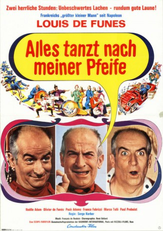
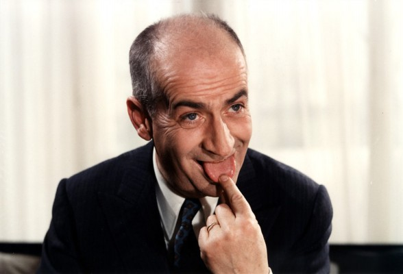
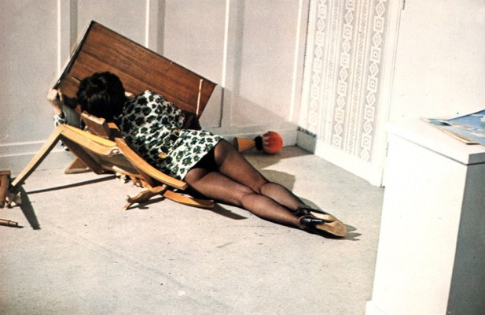
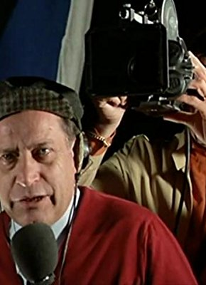

#4430 Alles tanzt nach meiner Pfeife
Alternativ: The Band (Englischer Titel)
 
 IMDB-Wertung: 6.3 / 10
IMDB-Wertung: 6.3 / 10  Metascore: 0
Metascore: 0 
Der überdrehte und tyrannische Balduin managt eine berühmte Balletttruppe, deren zwölf Tänzerinnen als echte Attraktion gelten. Während ihrer Tournee wacht Balduin über das Training, die Disziplin und vor allem die Moral seiner Mädchen, weshalb er sich das Vertreiben von Verehrern und Milliardären auf Brautschau zu seiner vorrangigen Aufgabe gemacht hat. Diese zwingt ihn zu strategischen Kraftakten und raffinierten Tricks, die ihn bisweilen an den Rand des Nervenzusammenbruchs bringen.
Jahr: 1970
Dauer: 76 Minuten
FSK: 6
Land: Studio: Constantin FilmTonspuren:
Untertitel:
Auflösung: 720p (1280x720) Größe: 2396 MB
Genre: Komödie, Musical
Regisseur: Serge Korber
Drehbuch: Vera Chapman
Soundtrack:
Darsteller:
-  Louis de Funès als M. Édouard - dit 'Evan Evans'
- Franco Fabrizi als Franco Buzzini - le fiancé de Françoise
-  Micheline Luccioni als La femme ivre sur le yacht , uncredited
- Noëlle Adam als Françoise
- Olivier De Funès als Philippe Evans
- Daniel Bellus als Le jeune automobiliste au feu rouge
- Max Desrau als Un automobiliste au feu rouge
- Tiberio Murgia als Le père sicilien
- Vittoria Di Silverio als
- Martine Kelly als La danseuse qui se marie / Rejected dancer
- Paola Tedesco als La fille sicilienne
- Franco Volpi als Le marquis
- Michèle Alba als Une danseuse
- Lydie Callier als Une danseuse
- Géraldine Lynton als Une danseuse
- Francoise Occipinti als Une danseuse
- Christine Reynolds als Une danseuse
- Annie Trembasiewicz als Une danseuse
- Leila Bouvier als Une danseuse
- Françoise Gres als Une danseuse
- Sylvie Maumet als Une danseuse
- Elisabeth Plazanet als Une danseuse
- Rosario Toledano als Une danseuse
- Danielle Minazzoli als Une danseuse
- Puck Adams als Lina
- Marco Tulli als Le commissaire
-  Paul Préboist als Le directeur de l'hôtel romain
- Calogero Azzaretto als Un sicilien , uncredited
- Robert Castel als Un agent , uncredited
- Michel Charrel als Un agent de la circulation , uncredited
- Jacqueline Doyen als Une automobiliste au feu rouge , uncredited
- Christor Georgiadis als Chris , uncredited
- Edward Meeks als (uncredited
- Ibrahim Seck als Le chauffeur du car , uncredited
Datei: X:\Person\Louis de Funès\Alles tanzt nach meiner Pfeife (1970, FSK6, 1280x720).mkv seit 16.09.2016
Festplatte: HD Collection-7+mehr(A-Z)+Person
 Es gibt insgesamt 33 Filme in der Gruppe 'Person\Louis de Funès'
Es gibt insgesamt 33 Filme in der Gruppe 'Person\Louis de Funès'